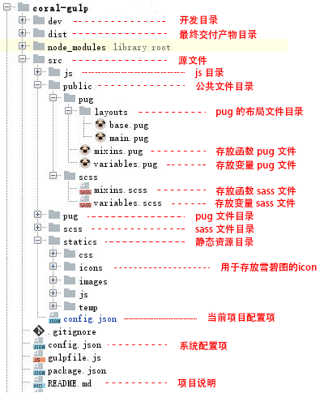
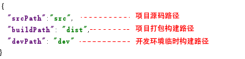
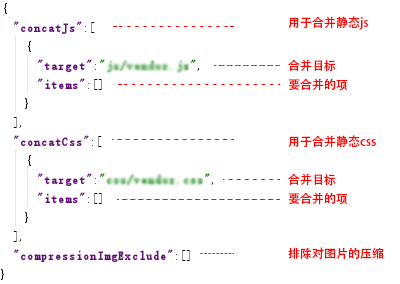
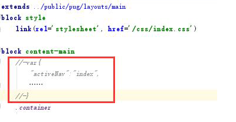
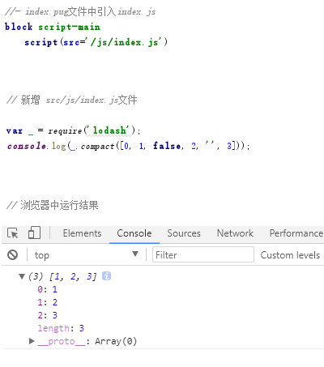
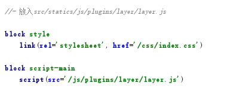

系统配置项"config.json"，存放于根目录：

多个项目时（移动端等），只需修改系统配置项中的文件夹名即可。
项目配置项“src/config.json”，可对当前项目进行配置：

我们规定 pug和 sass作为前端开发的html和css预编译语言。
存放在src/public下的文件系统将不会进行编译，所以对于公共且不用编译的文件，请放在src/public文件夹下。
src/pug目录用于存放pug文件，一个pug文件表示一个页面。
· src/public/pug/layouts/base.pug 文件为基础布局，通过继承base布局来实现定制。
· src/public/pug/mixins.pug 存储公共的函数，此文件被base布局引入，继承base布局的文件可使用里面的函数。
· src/public/pug/variables.pug 存储公共变量，同上继承base布局的文件可使用里面的变量。
原生的pug不支持从页面向布局中传递变量，为此本系统进行了扩展：

在src/pug目录下pug文件中采用红框中的写法即可向布局传递数据。
系统还对src/pug目录提供“pageTitle（当前pug文件名）”和“environment（当前的开发模式，值分别为dev和build）”两个默认变量。
src/scss目录用于存放sass文件，一个sass文件表示一个样式文件。
为了更贴合原生css开发，我们采用.scss为后缀名的sass文件来开发。
· src/public/pug/layouts/base.pug 文件为基础布局，通过继承base布局来实现定制。
· src/public/pug/mixins.pug 存储公共的函数，此文件被base布局引入，继承base布局的文件可使用里面的函数。
· src/public/pug/variables.pug 存储公共变量，同上继承base布局的文件可使用里面的变量。
在写css的时候手写属性浏览器前缀是很乏味和易错的过程，为此系统新增了可以在sass编译过程中自动添加浏览器前缀的功能。
同样编码过程中制作css雪碧图也是件体力活，为此系统也新增了自动生成雪碧图的功能，只需为用的到的图标文件存放在“src/statics/icons”文件夹下即可。
对于js的抒写我们使用类似于 node 的 require() 的方式来组织浏览器端的 Javascript 代码，系统通过预编译在js文件中可以直接使用 Node NPM 安装的一些库。
稻壳web前端开发强制使用规定插件，插件的npm包请见 README.md 文件。
插件通过命令行 npm install --save-dev <包名>安装成功后，通过以下示例方式引入：

本系统采用npm安装js插件资源的方式，所以对于静态资源请放在src/statics文件夹下。
静态资源引入无需加入“statics”，系统会自动复制statics文件夹下的所有文件并进行合并替换（注意静态资源名不要和src/js、src/scss文件下下文件名重名）。

对于存放在“src/statics/js”和“src/statics/css”下的静态资源，系统提供了自动合并压缩的功能，具体使用请查看配置说明。
本系统内置了图片自动压缩功能，可以在build时自动为图片进行压缩，虽然系统内置了压缩，但我们切图时还是必须对图片进行压缩后导出，这样配合系统的压缩功能，可以使图片最优化。